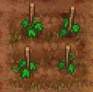

Vine trellis
| Vine trellis | |
|---|---|
 | |
Basic information
| |
Required Technology :
|
Grape farming |
Related pages :
|
Farming |
Building Information
| |
Horizontal x Vertical :
|
3x3 |
Rotatable :
|
False |
Location(s)
| |
| Vineyard | |

The vine trellis is used to grow hops and grapes. How quickly things grow, the yield, and their quality is highly dependent on the fertilizers you use, any active sermons, and your chosen perks. For more information see the page on farming.
Cost
 Vineyard Vineyard
| |||
|---|---|---|---|
| Icon | Materials Required | Energy | Notes |

|
5× Wooden stick |
- |
Requires: Grape farming |
Recipes
| Item Produced | Materials Required | Time |
|---|---|---|
| ?× Hops ?× Hops seed ?× Crop waste |
4× Hops seed |
24:00 |
| ?× Grapes ?× Grape seed ?× Crop waste |
4× Grape seed |
36:00 |
| ||||||||